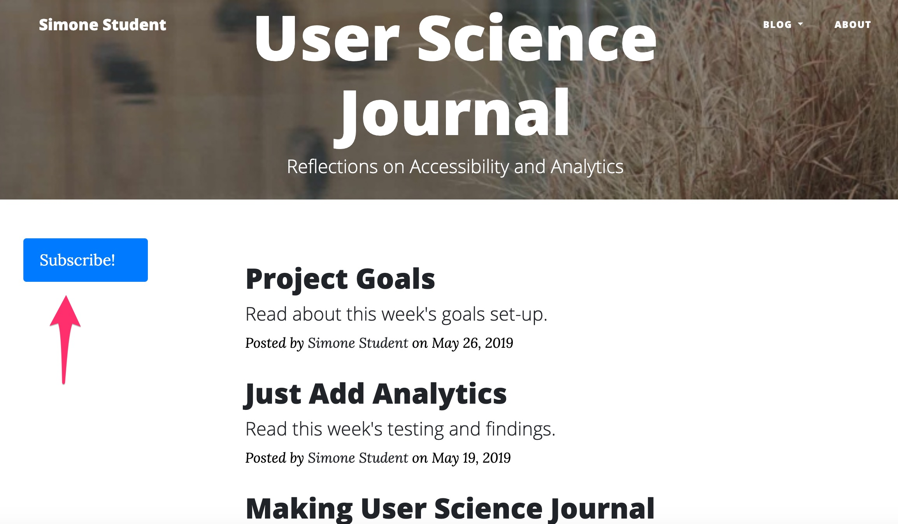
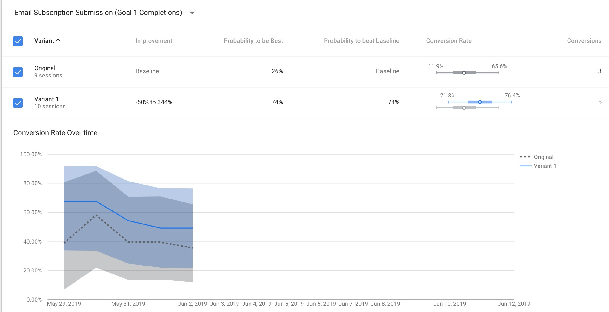

Analytics data, usability, accessibility, goal funnels, oh my!
This week I conducted a performance review of the Index page of my User Science Journal. The goal of this page is to have visitors click on the blue Subscribe button. I ran a Lighthouse accessibility audit on the page and it returned a relatively good score of 90, which could be improved by increasing the color contrasts on the page:
For usability, I conducted a quick informal testing on the site with 3 testers. Basically, I had them look at the site on my laptop and asked them to decide on what to click on first. All three testers clicked on the first listing on the page, which was my Blog Post 8: Project Goals.
The Google Analytics report represented this behavior:

Since my goal was to gain clicks on the Subscribe! button, I decided to conduct a content experiment on the page.
A/B Testing
A/B testing is a basic testing method to compare two versions of something against each other to determine which performs better. A/B testing is common for webpages and apps. Google Analytics has a free optimize tool that can be used. The
Google Analytics Optimize Tool was easy to set-up and it required an addition of the optimize ID to be added to the "gtag" code:
I made a small change on the page by moving the Subscribe! button from the left side of the screen(original) to the right side(variant):


Results/Conclusion
The A/B testing ran for 5 days. With 19 experiment sessions, the results were quite clear. More visitors clicked on the button when it was on the variant side than the original side. It is interesting how a small change can make such a difference in the conversion rate of a goal. The conversion rate on variant sessions was 74% and only 26% on the original. 